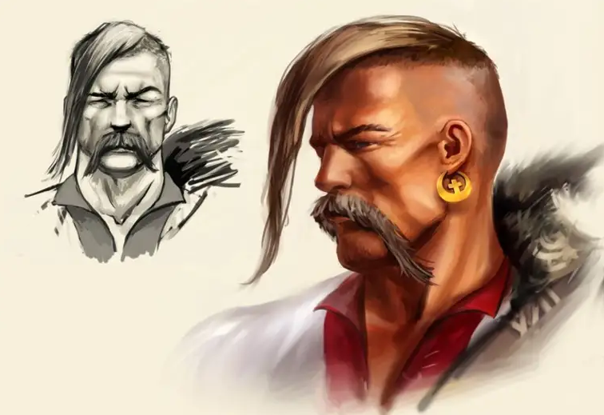

Стаття про українських козаків
Українське козацтво надзвичайно цікаве та важливе явище в історії як країни так і світу. Козаки
дивували, та
захоплювали, надихали митців на створення своїх шедеврів, берегли рідну культуру та звичаї. Згадки
про
козаків зустрічаються й в зарубіжних джерелах. Однак козаки були не просто вояками, адже поряд силою,
мужністю, розумом, хитрістю повсякчас зустрічається елемент загадковості та містики.
То можливо
запорожці були не
такими вже й звичайними лицарями?
Пропонуємо поринути в захоплюючий світ козацтва з підбіркою
найцікавіших фактів про них.
Однією з важливих переваг козаків, окрім сили, зброї та неперевершеної
бойової майстерності були хитрість та не аби яка
кмітливість. Практично завжди запорожці непомітно підкрадалися до своїх ворогів, та заставали їх зненацька,
забезпечуючи собі тим самим більше шансів на перемогу.
Цікаві та маловідомі факти про українських козаків
Козацькі човни
Не можна не згадати про унікальні та оригінальні козацькі човни, що використовувалися для походів. Як це не дивно, але козацькі судна можна сміливо назвати праобразом сучасних підводних човнів, адже вони були побудовані особливим чином, з використанням подвійного дна. Між двома днищами човна розміщували вантаж-баласт, завдяки якому судно занурювалося в воду, це давало можливість непомітно під пливти до недругів. Перед боєм же цей баласт викидався, а човен несподівано для ворога виринав на поверхню, це ставало справжнім шоком для ворогів, адже ніхто навіть не думав що човен з козаками може виринути з морських глибин. Задля досягнення такого ж ефекту несподіванки часто використовували й інший метод, а саме перевертали чайки догори дном. Козацькі чайки були і лишаються неперевершеними зразками суднобудування, ці човни були надзвичайно міцні, але в той же час легкі та маневрені.
Закони та правила на Січі
Закони та правила на Січі були суворими та інколи жорстокими. Так за крадіжку чи вбивство побратима, винуватець не те що повинен буде розплачувався своїм життям, а робив це в доволі жорстокій формі: його могли бити кийками чи навіть поховати живцем в домовині разом з небіжчиком. Можливо це було зовсім не гуманно, але дисципліна в козаків була відмінна.
Надзвичайні явища
Надзвичайним явищем в козацькому світі були особливі хлопці та чоловіки, так звані характерники. За
переконаннями своїх сучасників походили вони від древніх, ще язичницьких, волхвів, які вміли пророкувати
майбутнє та володіли
таємними знаннями. Згідно теорій деяких вчених, факт існування характерників можна пояснити наступним, після
прийняття християнства на Русі язичників почали переслідувати греки та князі. Тому, для волхви починали
тікати та
створювати невеликі об’єднання – січі, подалі від великих міст. Саме в таких об’єднаннях волхви навчали
воїнів всім
особливостям бойових мистецтв, звичаям, обрядам та передавали свої знання. Про козаків-характерників
згадують наступне,
«їх ні вода, ні вогонь, ні шабля, ні звичайна, не срібна, куля не брала», що вони «могли плавати на човнах
по підлозі,
відкривати замки без ключів, переходити водойми по циновках з лози чи сукняній повсті, бачити навкруг себе
за кілька
верст, брати в руку розпечені ядра та залізо, влазити та вилазити з міцно зшитих чи зав’язаних мішків,
перетворювати
вершників на птахів, людей у кущі, а самі могли «перекидатися» на котів, залазити в відро та плисти в ньому
під водою
тисячі верств»…
Козаки не лише користувалися своїми власними знаннями, вони збагачували та запозичували
свої вміння досягненнями й інших народів. Так існують згадки що на Запорізькій Січі жилий іноземні гості та
представники близько 20
національностей. Окрім гостей, козаки їх старшина та гетьмани доволі багато подорожували, знайомлячись з
культурою, науковими
здобутками та звичаями інших націй, тим самим збагачуючи свою.
Одного загального прапора в козаків не
існувало, кожна сотня чи полк мали свої власні стяги, однак починаючи з 17
століття з’являються згадки про головний прапор запорізької січі. На цьому стязі було зображено Архангела
Михаіла на червоному фоні з одного боку, а з іншого білий хрест, золотаве сонце, півмісяць та зорі. А
своєрідним символом-гербом став образ козака з мушкетом.
Незвично та цікаво що на козацьких прапорах
доволі часто
зображували шестикутну зірку. Згідно давніх переконань та вірувань, це був знак гармонії, який міг
символізувати окремий
рід чи бути символом магії.
Подейкують, що на Хортиці й досі росте дуб, оспіваний козацькими
легендами, думами та піснями. В деяких з них розповідається про обряди та ритуали, які проводили перед
боєм. Місцеві жителі переконані, що тому дубові
вже 700 років.
Зачіска козаків
Одним з невід’ємних атрибутів козака була його зачіска та вуса, за думками більшості дослідників, запорожці успадкували цю традицію від своїх предків язичників. Традиція голити обличчя та голову дійшла Київської Русі від місцевих племен, а з часом дійшла й до запорізьких козаків. Згідно історичних дослідженні у древніх слов’ян не було жодного божества з довгим волоссям чи бородою, отже такий зовнішній вигляд вважався божественним. Хоча на противагу цій теорії існує легенда, що козаки вважали себе надто грішними щоби попасти до раю, а отже може Господь змилується над ними й витягне з пекла за чуба. Козаки вважали, що як загинуть на війні, їх янгол в небо понесе за чуприну. Цікаво що така легенда та зачіска притаманна не лише українським козакам. В давні часи оселедців вистригали й єгипетським фараона, й індіанцям з далеких племен, й татарам, персам, японським самураям та багатьом іншим також згадки про таку зачіску можна зустріти в різних казках та легендах, згадайте хоча б турецького Джина. Практично для всіх народів де використовувалась зачіска «оселедець», вона символізувала «промінь сонця», головною відмінність між козацькими оселедцями та іншими народами було його місце положення, так запорожці вистригали чуб на лобі, в той час як інші робили його на потилиці чи по центру голови.
Походження терміну «Козак»
Походження самого терміну «козак» оповите різноманітними теоріями. Так згідно переконань деяких польських вчених, поняття козак пішло від імені відомого ватажка Козака, який майстерно боровся з татарськими завойовниками. Ще одна теорія походження цього поняття, базується на слові «коза», адже козаки були хитрими й могли проникнути будь-куди. В перекладі з турецької «козак» означає «розбійник, волоцюга», логічно допустити що саме таке прізвисько турки давали українським воїнам. Очевидно саме воно й прижилося, та з часом втратило своє негативне значення.
Козаки і Америка
Цікавим історичним фактом є й те що українські козаки добралися й до Америки. Так Джон Сміт, засновник одного з перших поселень британців на американському континенті, брав участь в боротьбі з турками та татарами й потрапив в полон. Сміта з полону врятували запорізькі козаки, він гостював на Січі звідки й повернувся до Англії, куди й запросив своїх рятівників. Саме в цей період англійці вирішили заснувати першу колонію на території Америки. Джон Сміт вирушив у цю подорож прихопивши з собою декількох козаків, що виявили бажання подорожувати разом з ним. Саме так українці допомагали засновувати Америку.
Відомі українські козаки:
- Остафій Дашкевич (Дашкович) (1455 – 1535)
- Яків Стефан Іскра-Острянин (Остряниця) (р.н. невідомий – 1641)
- Данило Павлович Апостол (1654 – 1734)
- Павло Полуботок (1660 – 1724)
- Іван Брюховецький (1623 – 1668)
- Петро Дорошенко (1627 – 1698)
- Іван Сірко (1605 (1610) — 1680)
- Богдан Хмельницький (1595-1657)